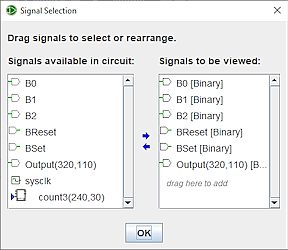

The Selection tab
The Selection tab allows you to select which values should be included in the log. The window below corresponds to the following circuit.


The window is divided into two areas: on the left is the list of available signals, including those of sub-circuits. On the right is the list of signals to be followed in the chronogram.
To add signals to the diagram, left-click the desired signal in the left-hand list, or ctrl-click several signals. Then right-click to drag them into the right-hand list. You can also click on the small blue →.
To delete signals, select them with a left click in the right-hand list, then left-click on the small blue ← To rearrange signals, select them in the right-hand list and with a with a left clicky maintained move them up or down in the column.
When you select a signal in the right-hand column, an Options button appears. This allows you to define the display base. Finally, click on the OK button.
The label value will be shown if it is associated with a component, otherwise the name and location in the circuit will be used for reference.
Next: Timetable tab.